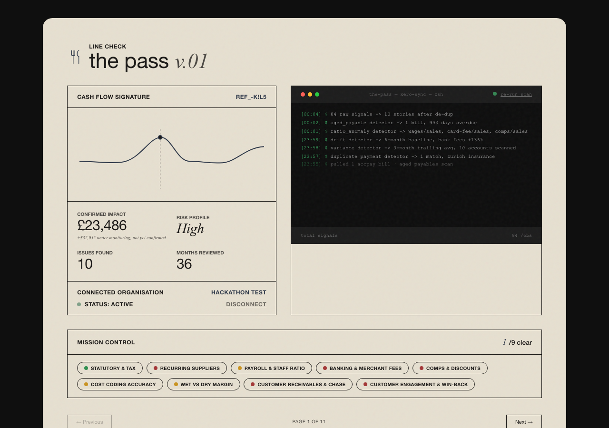
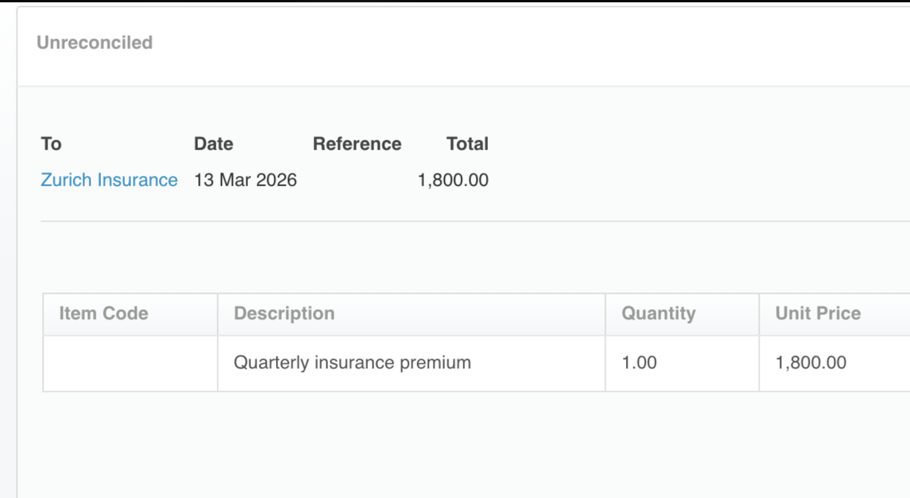
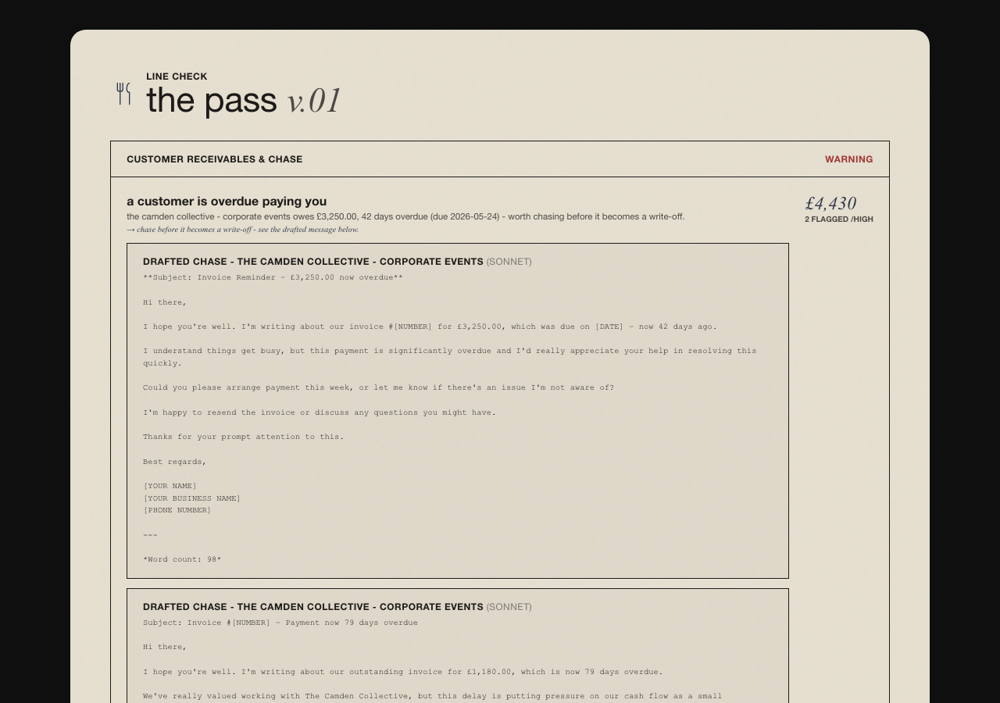

the pass v.01
A line check for a hospitality operator's Xero books.
Why
Hospitality runs on Xero.
Owners see a fraction of what their data knows.
The accountant files. The reports go unread.
The idea
Your data holds the answers.
No one is watching it. Now something is.
Constant oversight of your books — an LLM you can talk to about the
patterns in your business. Yours first. Your accountant's if you want.
The magic
An accountant checks what you ask.
This checks everything.
Wages creeping ahead of sales. Fees doubling, slowly. A big regular gone quiet.
Every account, every ratio, three years deep — on every scan.
The product

Mission control. Each part of the business, checked, with a status.
Live
Watch it run.
the-pass — xero-sync — zsh
$ python3 detect.py
Pulled 477 bank transactions from Xero
duplicate_payment detector → 1 match, zurich insurance
variance detector → 3-month trailing avg, 10 accounts scanned
drift detector → 6-month baseline, bank fees +129%
ratio_anomaly detector → wages/sales, card-fee/sales, comps/sales
aged receivables → 2 overdue · customer churn → 1 gone quiet
84 findings written to findings.json
Live Xero, from scratch — then ask it anything.
What it caught
High
Zurich Insurance, paid twice — £1,800 on 10 March, again on the 13th.
Ratio
Wages hit 33% of sales. Usual: 26%. The pound amounts looked fine.
Drift
Bank fees crept £127 to £291 in six months. No single month rang an alarm.
Churn
Borough Films: six bookings near £3,000 each — then 418 days of silence.
84 findings · 36 months · one small tavern
Proof, not promises

The double payment, in Xero itself. Every transaction here came through the API.

The chase email, already written.
What we built
Why trust it
Deterministic where money demands accuracy.
AI where language beats arithmetic.
It cannot hallucinate a finding.
Accounting API — 8 endpoints
Organisation, Accounts, Contacts, BankTransactions, Invoices,
P&L, Aged Payables, Aged Receivables
Remote MCP Server
Full handshake against builders.xero.com, live
OAuth2 PKCE
Refresh + RFC 7009 revocation
Signed webhooks
HMAC-SHA256, tested — tampered payloads rejected
Where it grows
Webhooks — catch it the day it happens.
Multi-org — one owner, ten sites, one report.
Payments data — act on cash flow, not just see it.
Real oversight.
More value from Xero.
More profit.
1 / 12